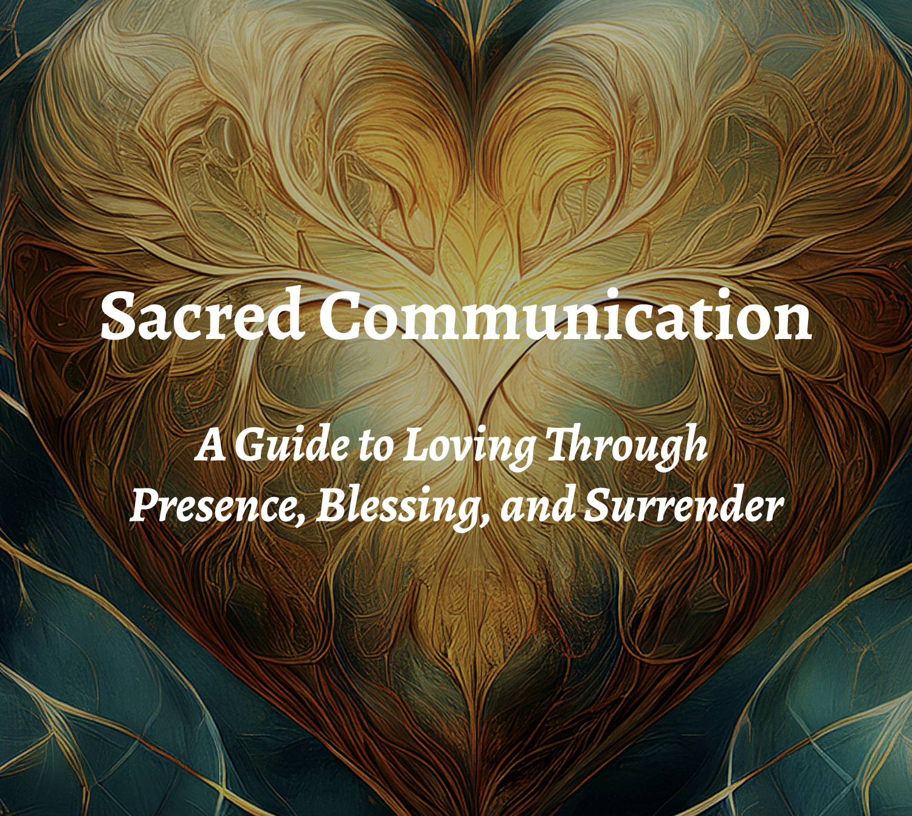

Start Here
7 Days to Reset Your Heart
A gentle 7-day guided reset to help people reconnect, realign, and begin again.
Book Catalog
From the Rise & Shine journey to the Sacred Guide titles, this page gathers the full catalog in one place so readers can see the whole body of work at a glance.
New Release · The Divine Series
A quiet, reflective parable about sorrow, stillness, and a place to rest.
A single tree stands in a quiet valley — steady, unhurried, undisturbed. People come with what they have lost. Some leave. But some stay.


Also Featured · The Divine Series
A quiet, contemplative story of wandering, being found, and learning to rest again.
Told through a simple parable and hand-drawn imagery — a lamb who drifts, a Shepherd who comes near. Not loudly. Not forcefully. But steadily, gently… and by name.


New Release · A Parable of Surrender
A quiet parable about love, faith, and the courage to let go.
The fiercest battles are not fought with swords, but within the heart. Not a story about winning love back — a story about becoming whole.


New Release · Sacred Communication Series
A reflective illustrated parable of grace, love, and restoration.
The weight we carry. The fear of letting go. The courage it takes to release, to heal, and to trust again. Love — true love — was never meant to be held by force.


New Release · Still Waters, Sacred Identity
A contemplative illustrated parable about fear, gentleness, and the Shepherd who restores the heart.
Sheep will not drink from rushing water. So the Shepherd kneels and places stones — slowly, patiently — until the waters become still. Peace is something He prepares for us.


New Release · A Parable of Restoration
A contemplative illustrated parable about restoration, healing, and the quiet courage to rebuild.
Where others see ruin, she sees beauty waiting to be uncovered. What was once broken becomes strong. What was once dark fills with light.
New Release · A Story of Becoming
A quiet illustrated parable about learning to trust the process of growth.
Through changing seasons, gentle lessons, and the presence of an unseen Gardener. Not everything is meant to be controlled… and not everything is ours to carry.


Featured journey
These are the clearest entry points for new readers: the free 7-day reset, the deeper 30-day experience, and the companion titles that support the same journey.
A gentle 7-day guided reset to help people reconnect, realign, and begin again.

The Manifesting Heart Journal for intentional, heart-led growth and deeper reflection.

Daily reflections for healing, wholeness, and manifesting with heart.
The Divine Series
Contemplative illustrated parables exploring presence, sorrow, belonging, and the quiet work of the heart — told through simple imagery and gentle language.

A reflective parable about sorrow, stillness, and a quiet place to rest.

A quiet, contemplative story of wandering, being found, and learning to rest again.
Books and parables
Illustrated stories and contemplative books exploring healing, trust, surrender, restoration, and spiritual renewal.

A guide to loving through presence, blessing, and surrender.

A quiet illustrated parable about love, faith, and the courage to let go.

A reflective illustrated parable of grace, surrender, healing, and restoration.

A quiet illustrated parable about fear, gentleness, and the Shepherd who restores the heart.
A contemplative illustrated parable about restoration, healing, and the quiet courage to rebuild.

A peaceful illustrated parable about growth, trust, timing, and becoming.
Contact
If you want to connect about the work, features, or future collaborations, reach out here.